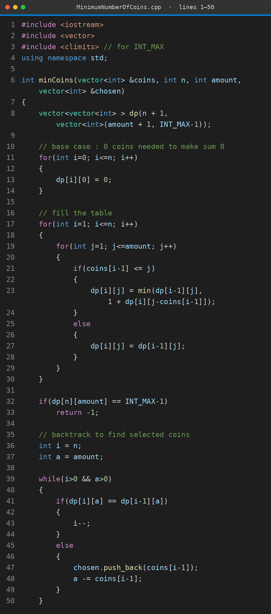
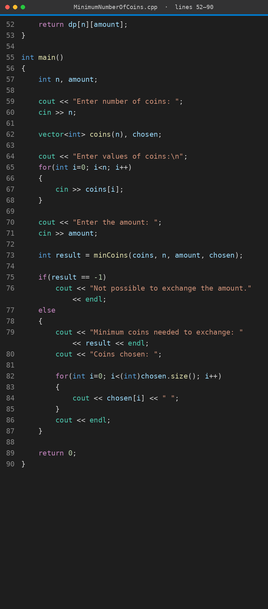

We have coins of different values (each coin can be used any number of times) and an amount. We want to make the amount using the fewest coins. If the amount cannot be made with the given coins, the answer is not possible.
Time O(n × amount) · Space O(n × amount)
